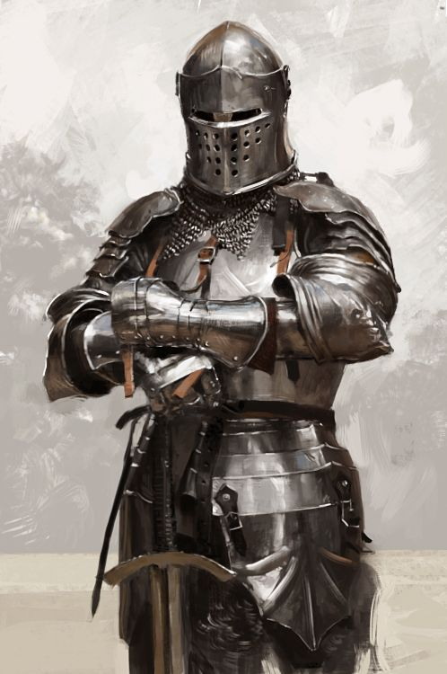
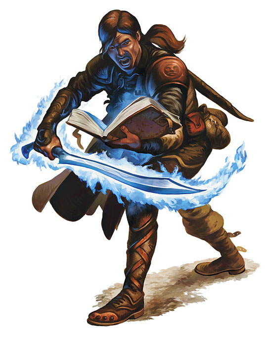
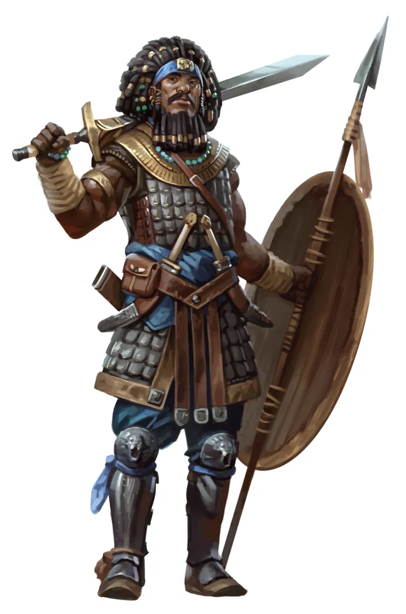

Arquétipos Marciais
No 3º nível, você escolhe um arquétipo o qual se esforçará para seguir as técnicas e estilos de combate dele. Escolha Campeão, Cavaleiro Arcano ou Mestre de Batalha, todos detalhados no final da descrição da classe. O arquétipo confere a você características especiais no 3º nível e de novo no 7º, 10º, 15º e 18º nível.Arquétipo Campeão
O arquétipo Campeão foca no desenvolvimento da pura força física acompanhada por uma perfeição mortal. Aqueles que trilham o caminho desse arquétipo combinam rigorosos treinamentos com excelência física para desferir golpes devastadores.
Arquétipo Cavaleiro Arcano
O arquétipo de Cavaleiro Arcano combina a maestria marcial comum a todos os guerreiros, com um cuidadoso estudo de magia. Os cavaleiros arcanos usam técnicas mágicas similares as praticadas pelos magos. Eles focam seu estudo em duas das oito escolas: abjuração e evocação. As magia de abjuração concedem proteção adicional em batalha ao Cavaleiro Arcano, e as magias de evocação causam dano a vários oponentes de uma vez, estendendo o alcance do guerreiro em combate. Esses cavaleiros aprendem, comparativamente, um pequeno número de magias, guardando-as na memória ao invés de mantê-las em um grimório.
Arquétipo Campeão
Aqueles que emulam o arquétipo de Mestre de Batalha empregam técnicas marciais passadas de geração em geração. Para um Mestre de Batalha, o combate é um campo acadêmico, as vezes, incluindo assuntos além da batalha, como forjaria e caligrafia. Nem todo guerreiro absorve as lições de história, teoria e arte que são refletidas no arquétipo de Mestre de Batalha, mas aqueles que conseguem, tornam-se guerreiros bemsupridos de grande perícia e conhecimento